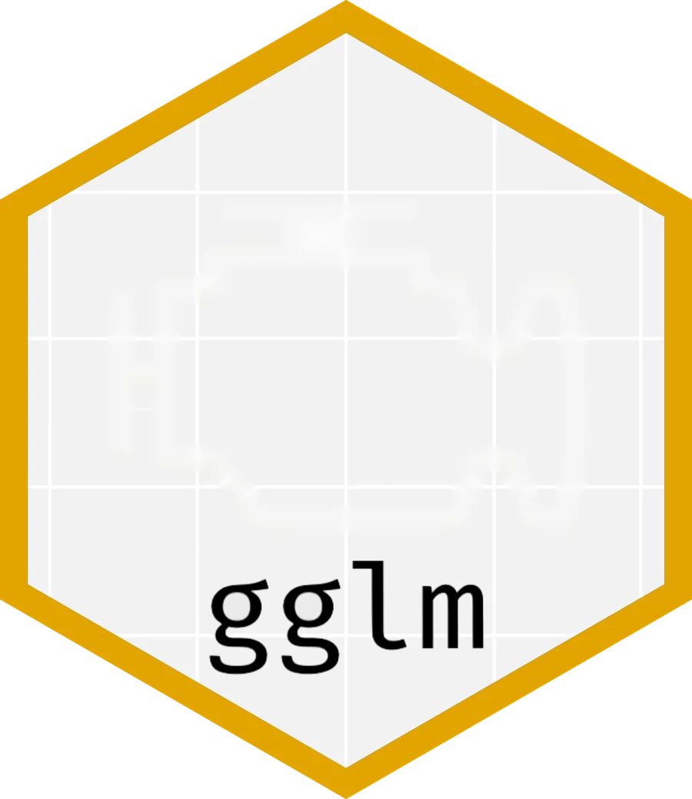
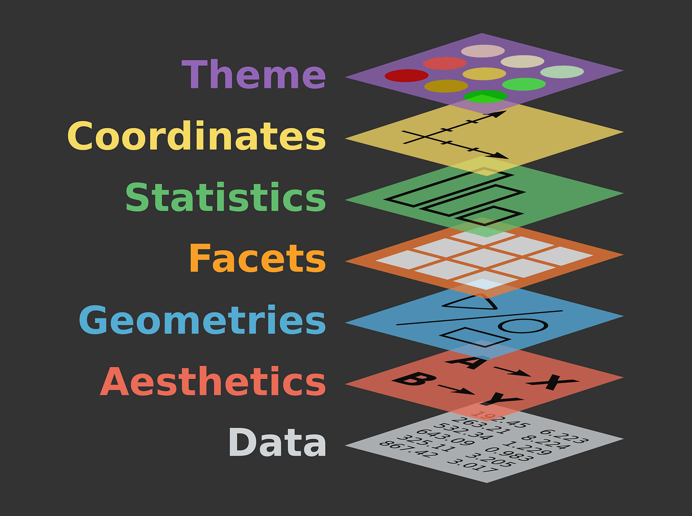
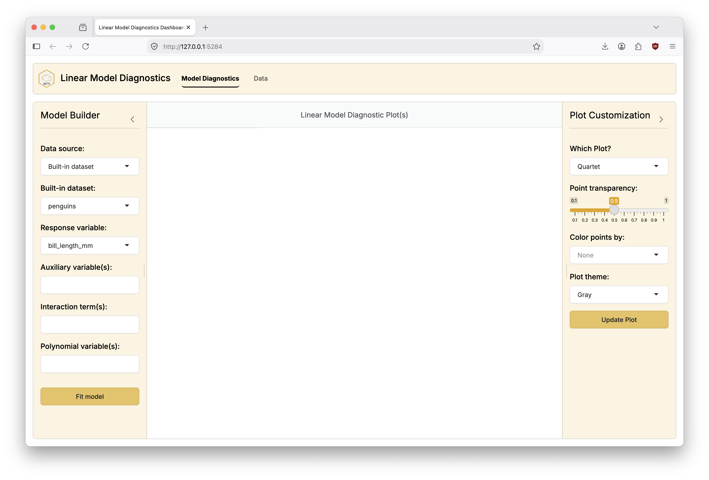
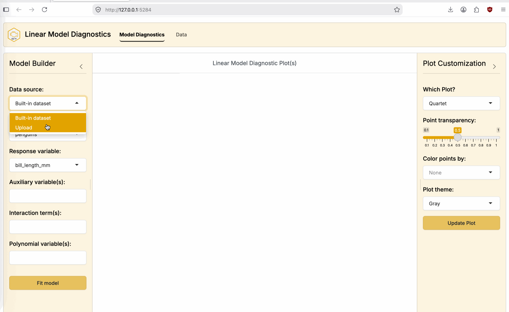
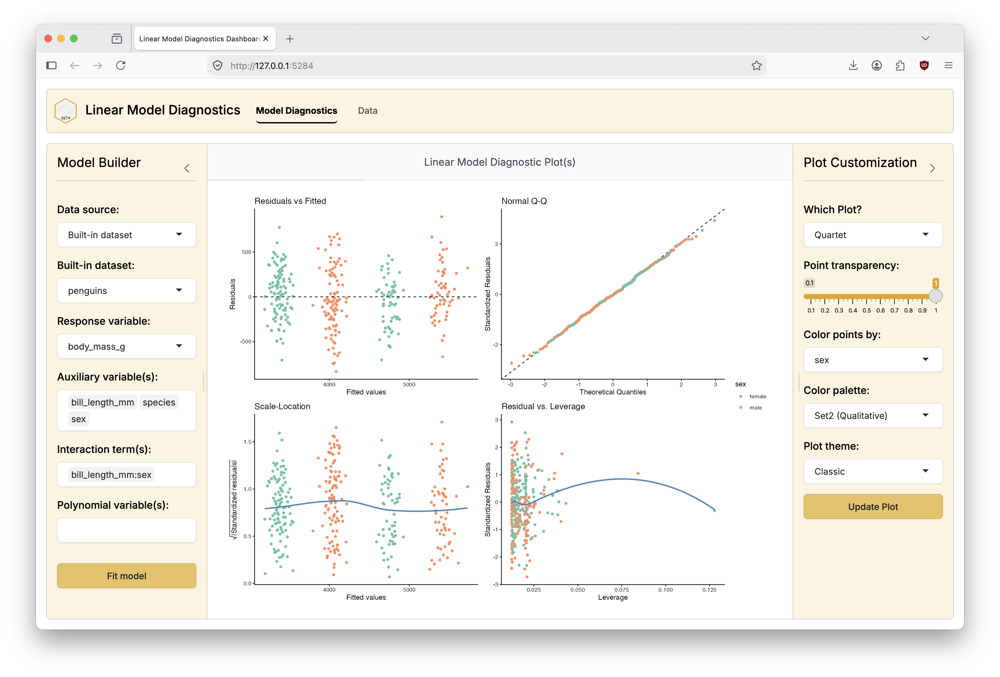

library(tidyverse)
# Six number summary
summary(mtcars)
# Boxplot - one categorical, one numeric variable
ggplot(mtcars, aes(x = as.factor(cyl), y = mpg)) +
geom_boxplot()
# Scatterplot - two numeric variables
ggplot(mtcars, aes(x = disp, y = mpg)) +
geom_point()
# Average by groups
mtcars %>%
group_by(cyl) %>%
summarize(avg_by_group = mean(mpg))
gglm: A tool for teaching linear model diagnostics while adhering to the grammar of graphics
Grayson White
Joint Statistical Meetings 2026
Boston, MA | August 6, 2026
Two ways of camping
The camp(R)
The camp(R): teaches R programming and statistics in their introductory statistics course.
The camper
The camper: doesn’t teach R programming in their introductory statistics course.
Both campers have data-centric classrooms!
Why such different camps?
Some possibilities:
Different goals?
- Statistical programming is taught elsewhere (e.g., introductory data science) at your institution.
- Statistical programming isn’t goal of your program / institution.
Different student populations?
Something else?
A common belief (that I share):
- Learning to code and to do statistics at the same time is hard!
But, when done right, they can be highly symbiotic.
I am a camp(R)
I believe that learning to code while learning statistics
helps students gain a deeper understanding of the material.
What is the value of learning to code?
When so many resources exist to help extract knowledge
from data without coding?
When an LLM can write (as good as) / (better) code than me?
Worst case: memorize symbols
Instructor: here’s my script to do _______.
Swap out the data / columns your asked to investigate and run my code. Don’t try to understand the code.
Worst case: memorize symbols
Instructor: here’s my script to do exploratory data analysis.
Swap out the data / columns your asked to investigate and run my code. Don’t try to understand the code.
Worst case: memorize symbols
Instructor: here’s my script to do a t-test.
Swap out the data / columns your asked to investigate and run my code. Don’t try to understand the code.
## Two-sample t-test
t.test(1:10, y = c(7:20)) # P = .00001855
t.test(1:10, y = c(7:20, 200)) # P = .1245 -- NOT significant anymore
## Traditional interface
with(mtcars, t.test(mpg[am == 0], mpg[am == 1]))
## Formula interface
t.test(mpg ~ am, data = mtcars)
## One-sample t-test
## Traditional interface
t.test(sleep$extra)
## Formula interface
t.test(extra ~ 1, data = sleep)
## Paired t-test
## The sleep data is actually paired, so could have been in wide format:
sleep2 <- reshape(sleep, direction = "wide",
idvar = "ID", timevar = "group")
## Traditional interface
t.test(sleep2$extra.1, sleep2$extra.2, paired = TRUE)
## Formula interface
t.test(Pair(extra.1, extra.2) ~ 1, data = sleep2)Worst case: memorize symbols
Instructor: here’s my script to do linear regression.
Swap out the data / columns your asked to investigate and run my code. Don’t try to understand the code.
## Annette Dobson (1990)
# "An Introduction to Generalized Linear Models".
## Page 9: Plant Weight Data.
ctl <- c(4.17, 5.58, 5.18, 6.11, 4.50,
4.61, 5.17, 4.53, 5.33, 5.14)
trt <- c(4.81, 4.17, 4.41, 3.59, 5.87,
3.83, 6.03, 4.89, 4.32, 4.69)
group <- gl(2, 10, 20, labels = c("Ctl","Trt"))
weight <- c(ctl, trt)
lm.D9 <- lm(weight ~ group)
opar <- par(mfrow = c(2,2), oma = c(0, 0, 1.1, 0))
plot(lm.D9, las = 1) # Residuals, Fitted, ...
par(opar)- Providing code in this way to students does not facilitate learning.
- We should be teaching generalizable skills, not special cases.
- There is little / no value in “learning to code” this way.
What should we do instead?
Provide students with the tools to learn code that have both a
design language and syntax that is consistent & intuitive.
Lots of great examples:


ggplot2 evokes a deeper understanding of graphics via the grammar

Once students have learned the grammar, they can use ggplot2 to answer any statistical or data-scientific question they’d like!
ggplot2 evokes a deeper understanding of graphics via the grammar
Once students have learned the grammar, they can use ggplot2 to answer any statistical or data-scientific question they’d like!
ggplot2 evokes a deeper understanding of graphics via the grammar
Once students have learned the grammar, they can use ggplot2 to answer any statistical or data-scientific question they’d like!
ggplot2 evokes a deeper understanding of graphics via the grammar
Once students have learned the grammar, they can use ggplot2 to answer any statistical or data-scientific question they’d like!
Linear Regression
Suppose that you ask your students to fit a linear regression model to predict penguin bill length by their body mass and sex.
# A tibble: 3 × 7
term estimate std_error statistic p_value lower_ci upper_ci
<chr> <dbl> <dbl> <dbl> <dbl> <dbl> <dbl>
1 intercept 27.9 1.32 21.1 0 25.3 30.5
2 body_mass_g 0.004 0 11.1 0 0.003 0.004
3 sex: male 1.25 0.532 2.34 0.02 0.2 2.29 What do you want your students to do as they fit and interpret this model?
Check if it is a sensible model!
This is a great solution for models that can be visualized in 2D.
But as soon as we’d like to assess more complex models, or just more formally check linear model assumptions, we need diagnostic plots.
Diagnostic Plots
Diagnostic Plots
Diagnostic Plots
Diagnostic Plots
Worries
- That, if our students can’t use our “universal” grammar of graphics to make basic diagnostic plots, that they won’t believe this grammar is too helpful.
- That students might just start to memorize symbols, because we no longer are consistent or intuitive in our syntax.
- That maybe, just maybe, we should have been in the other camp.
Solution: gglm
gglm provides diagnostic plots for linear models while adhering to the grammar of graphics through stat_*() layers that correspond to specific diagnostic plots.
Solution: gglm
gglm provides diagnostic plots for linear models while adhering to the grammar of graphics through stat_*() layers that correspond to specific diagnostic plots.
Solution: gglm
gglm provides diagnostic plots for linear models while adhering to the grammar of graphics through stat_*() layers that correspond to specific diagnostic plots.
Solution: gglm
gglm provides diagnostic plots for linear models while adhering to the grammar of graphics through stat_*() layers that correspond to specific diagnostic plots.
gglm has a slew of extra features
gglm lets you do anything you’d like to do with a regular ggplot object.
- For example, you can pass
aes()thetics to create more informative diagnostic plots.
gglm has a slew of extra features
gglm lets you do anything you’d like to do with a regular ggplot object.
- And of course you can customize to your ❤️ ’s content
gglm allows for quick and easy diagnostics
gglmprovides a do-it-all function for the classic quartet of diagnostic plots,
gglm allows for quick and easy diagnostics
gglmprovides a do-it-all function for the classic quartet of diagnostic plots,that you can even pass
aes()thetics and additional arguments to!
gglm: bells and whistles
gglmproduces diagnostic plots for any model compatible withbroom::augment()orbroom.mixed::augment().Find available models with
gglm::list_model_classes().Disclaimer: deciding on the relevance of these diagnostic plots for any particular model form is up to the user.
But what if you’re a camper, not a camp(R)?
gglm provides a shiny dashboard that displays interactive
model diagnostics with gglm::launch()
gglm::launch()

gglm::launch(): demo (built-in dataset)

gglm::launch(): demo (upload your own file)

gglm::launch(): details
- You can host your custom instance publicly / for your class with your own data via
gglm::launch().

- A basic instance is available online at graysonwhite-gglm.share.connect.posit.cloud.
Conclusions
- As long as we facilitate students extracting knowledge from data, there is no wrong way to camp!
- If you’re a camp(R), programming should be a tool that enhances understanding, not a barrier to extracting knowledge from data.
- Consistent, principled, and intuitive syntax can help achieve the above goal.
- I’d love to chat and give you a
gglmsticker!
Thank you for listening!
Get in touch:
- Email: gwhite@reed.edu
- Web: www.graysonwhite.com